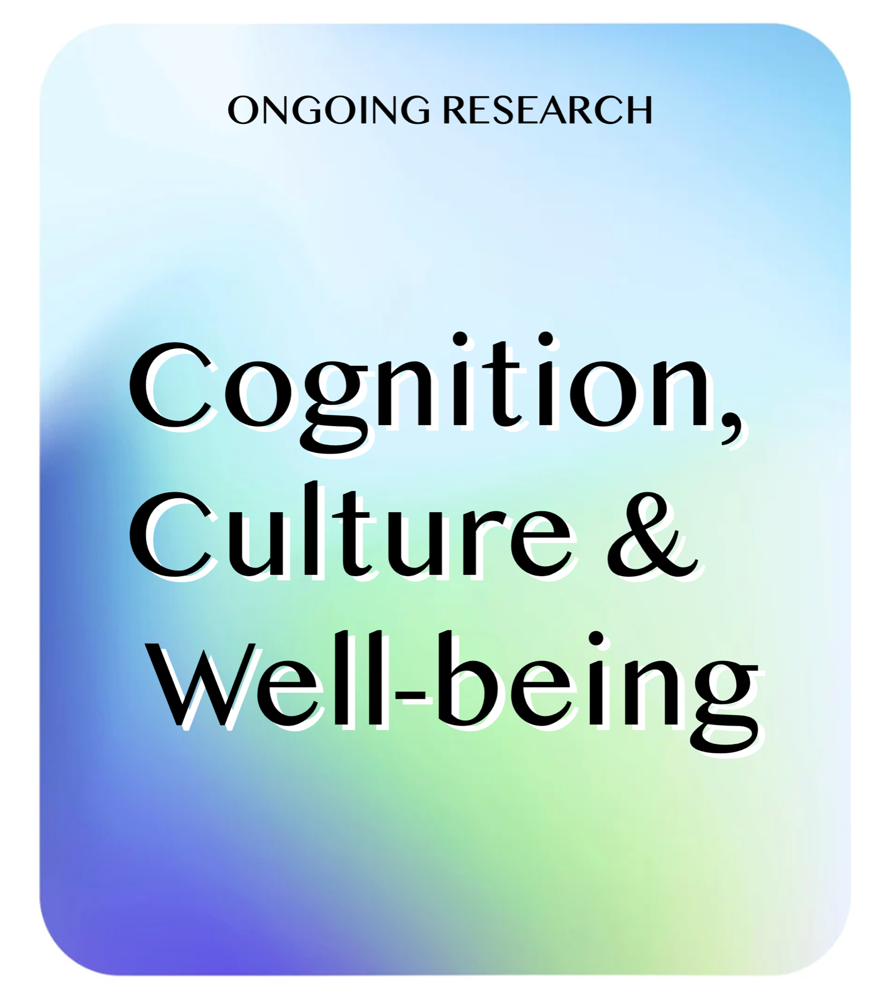
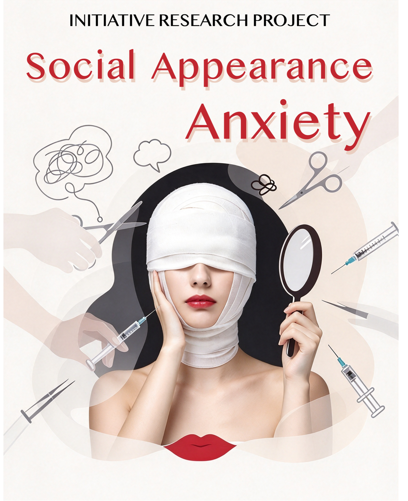
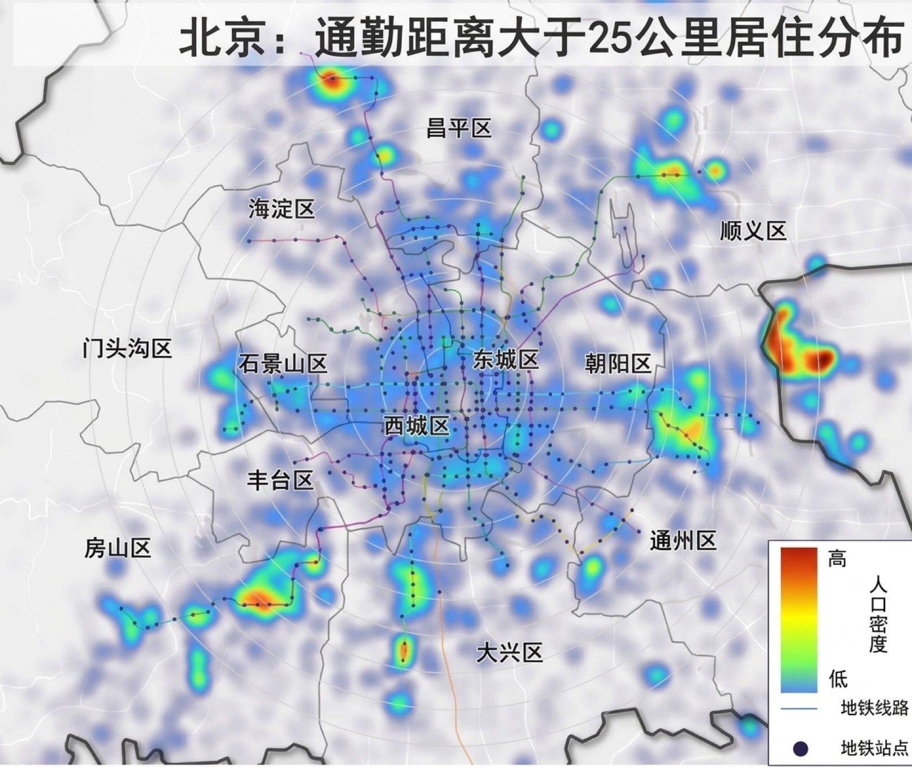
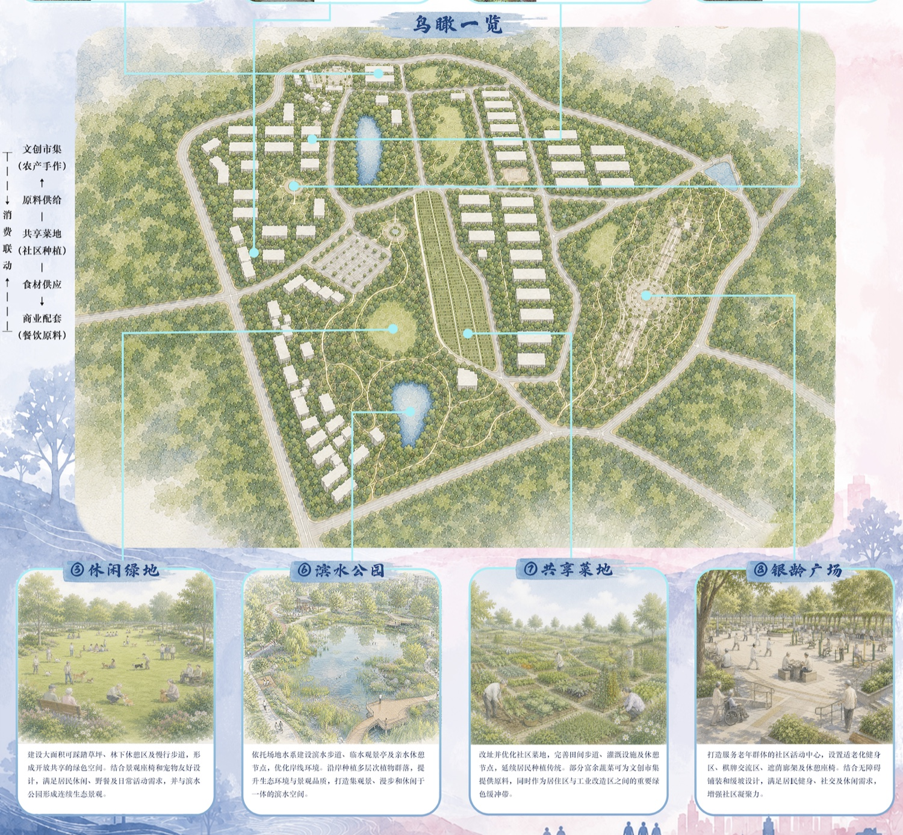
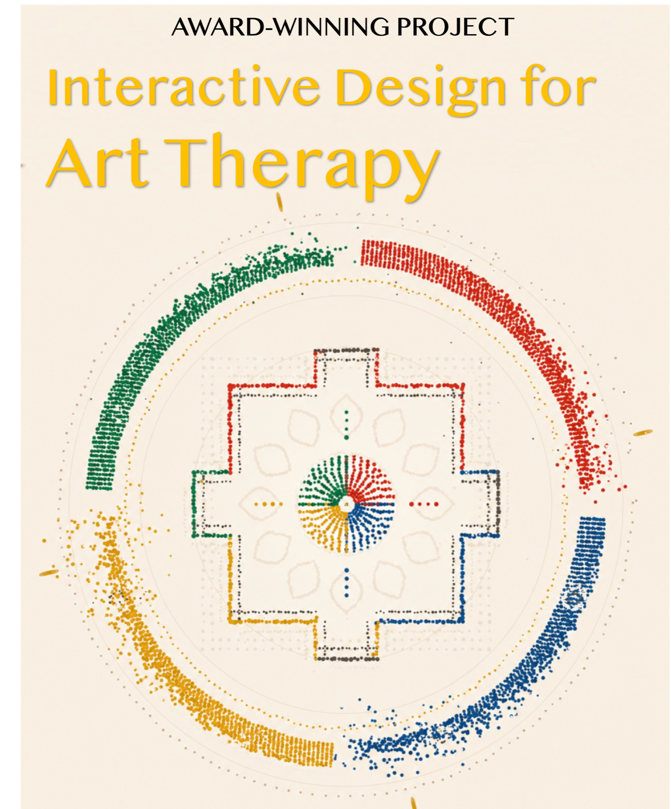

Interdisciplinary researcher & planner
About Me
Quick bio
📍 Born in HK 🏠 Raised in Taipei 🎓 University life in Beijing
Education
Peking University
Beijing
- Program
- 5-year program · Currently Year 5
- Degrees
- Bachelor of EngineeringBachelor of Science
- Major
- Urban Planning
- Double Major
- Psychology
- GPA
- 3.7 / 4.0
- 2025 Major Rank
- 1st
Award 2025 Merit Student
Scholarships PKU Scholarship 2024, 2025 · Xiaomi Scholarship 2025
Taipei Municipal Zhong Shan Girls High School
Taipei
Gifted & Talented Program in Humanities and Social Sciences
Silver Medalist, Taiwan Geography Olympiad (Geographic Research Division), 2021
Field Research
-
01

Ongoing Analytic-Holistic Thinking and Cultural Fit: City Environment, Congruence, and Subjective Well-Being -
02

Decoding and Intervening in Social Appearance Anxiety: The Impact of Attachment Styles and Gender -
03

How Commuting Attitudes Shape Life Satisfaction and Health: Evidence from Beijing -
04

Urban Renewal Design: Industrial Heritage & Aging Residential Community -
05

Award-Winning General Education Project: Interactive Design for Art Therapy
Internship
Internship experiences spanning commercial real estate, asset management, ESG consulting, and urban planning, including work with Swire Properties.
Apr–Jun 2026
SynTao
ESG Consulting Department · Beijing
- Provide tailor-made ESG solutions encompassing strategies, competitive peer analysis, and ESG rating improvements.
- Author bilingual ESG reports for listed corporations in high-tech, consumer electronics, and cybersecurity sectors.
Sep–Dec 2025
Peking University Planning and Design Institute
Urban & Spatial Planning Department · Beijing
- Contribute to urban planning projects for Yantai City, including spatial analysis and planning support.
- Independent Project: Developed a cultural tourism-oriented urban planning proposal for Yantai City, integrating spatial strategy and city positioning.
Jun–Aug 2025
Swire Properties
Marketing Department · Hong Kong · Overseas program
- Conduct research on smart applications in retail and commercial investment projects in Sanya, China.
- Analyze emerging marketing strategies and consumer engagement approaches in commercial real estate.
- Support strategic planning for retail project positioning and innovation initiatives.
Jul–Aug 2024
Skyfun Asset Management Company
Marketing Department · Taiwan
- Assist the group chairman with the daily agenda, including hosting monthly events and preparing expert and government meetings.
- Assist with background research for the government’s annual bidding.
- Plan and produce marketing materials, including scriptwriting and video editing.
Jul–Aug 2023
JSL Real Estate Company
Legal Department · Taiwan
- Keep sales agreement contracts up to date in compliance with new and evolving regulations.
- Assist the sales and legal team in drafting formal documentation and daily operations.
Volunteering
& Activities
- 2022–2025
Member of the Musical Drama Club, responsible for designing and promoting plays.
- 2022–Present
Key member of Taiwan Promotion Team in Hong Kong in Macau and Taiwan Office.
- 2023
Drama Competition Volunteer.
- 2022
Singing Competition Volunteer.
- 2022
Member of the Center for Vision and Design in Department of International Cooperation.
- 2022
Officer of Peking University's Hong Kong, Macao and Taiwan Class.
- 2022
Leader of a summer camp program for high school students.
Languages, Technical Skills & Interests
Languages
Technical Skills
Interests